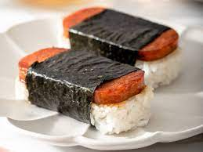

Spam Musubi

A relatively quick and simple meal or snack. Takes less than 5 minutes to prepare and will fill you up for hours!
A meal made up of 3 ingredients. Spam, rice, and roasted seaweed wrap. If you're feeling adventurous, you can mix things up and add eggs, mayo, or even teriyaki sauce
Ingredients
- Spam or luncheon meat
- Rice
- Roasted seaweed wrap
- Optional: Japanese mayo
Steps
- Prepare some rice or use leftover rice or use instant microwave rice (if you're in a hurry)
- Cut spam into medium-thin slices
- Cook spam to your preference
- Put on some disposable food safety gloves
- Cut the seaweed into size (just cut it down the middle)
- Shape the rice into a shape relatively similar to the shape of the slice of spam
- Wrap the rice, spam on top with the seaweed
- Enjoy!
- Optional: With Japanese mayo, you can smother it between the spam and rice for the ultimate snack or if you eat enough, can be a meal!
Next recipe
Previous recipe
Return to home